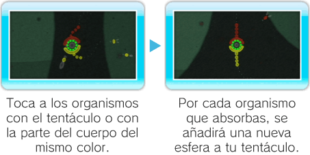
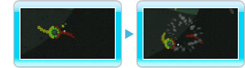
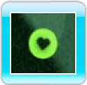
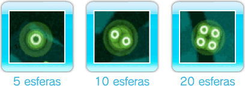

Utiliza

para desplazarte por la pantalla. Pulsa

para girar en el sentido de las agujas del reloj o pulsa

para girar en el sentido contrario.
-
Cómo hacer crecer los tentáculos
Toca a otros organismos con el tentáculo o con la parte del cuerpo del mismo color para hacer crecer dicho tentáculo. Al hacerlo, también aumentará tu puntuación en los modos Infinito y Cobra. La clave para tocar a los organismos del mismo color que tus tentáculos está en saber girar.

-
Daño
Tu organismo recibirá daño si uno de sus tentáculos o una de las partes de su cuerpo toca a un organismo de diferente color. Cuando reciba daño, perderá una vida y el tentáculo se romperá en el punto del impacto.

Nota: Si tu organismo recibe daño en un tentáculo con esferas agrupadas, el tentáculo se desplegará sin llegar a romperse. No obstante,
se le restará una vida a tu organismo.
-
Fin de la partida
La partida termina cuando pierdes todas las vidas. Selecciona una de las siguientes opciones en la pantalla de fin de la partida.
|
MENÚ
|
Vuelve al menú principal. |
|
REPETIR
|
Vuelve a comenzar la fase o el modo de juego actual.
|
-
Objetos
Durante el juego puedes encontrar tres tipos de objetos:
-
Corazón

Con cada Corazón recuperas una vida.
-
Ciclón
 Si recoges un Ciclón, una bola de energía
empezará a girar a tu alrededor, lo que te permitirá desencadenar un Ciclón.
Si recoges un Ciclón, una bola de energía
empezará a girar a tu alrededor, lo que te permitirá desencadenar un Ciclón.
-
Compresor
(Solo en los modos Infinito y Cobra)
Los Compresores acortan el tentáculo al que tocan. Hay tres tipos de Compresores con capacidad para agrupar 5, 10 o 20 esferas.

Ciclones
Los Ciclones te permiten absorber durante un tiempo limitado a todos los organismos a los
que golpeas sin sufrir daño. Consigue uno de estos objetos y sigue los pasos descritos a continuación para desencadenar un Ciclón.

 Cuando la energía esté concentrada alrededor de tu organismo, suelta el botón para desencadenar el Ciclón.
Cuando la energía esté concentrada alrededor de tu organismo, suelta el botón para desencadenar el Ciclón.